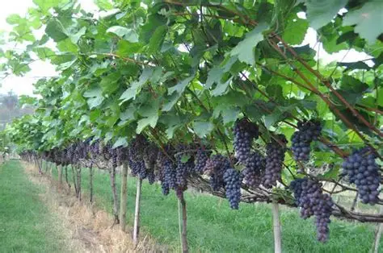
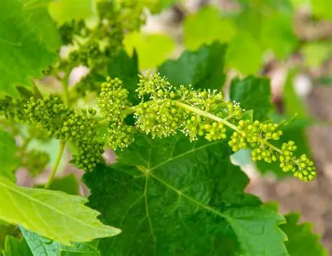
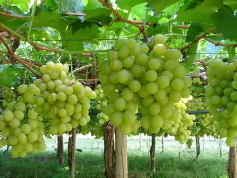
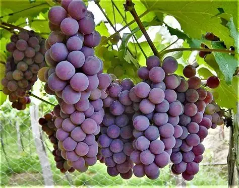
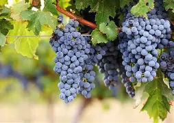
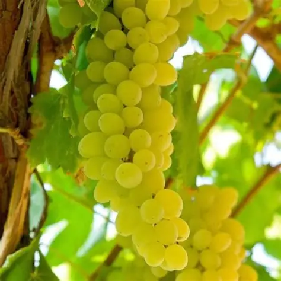
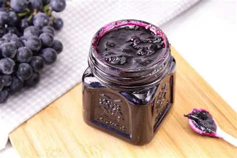
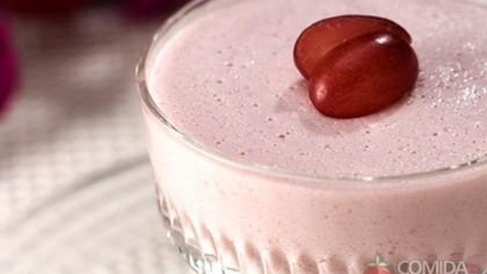

A uva, hoje conhecida por suas mais de 3.000 variedades, teve origem |
O plantio da uva é feito por meio de mudas (estacas da videira), geralmente no final do inverno ou início da primavera, |
 |
O momento da floração da videira é extremamente importante e pode definir uma vindima. |
 |
Uva Itália::A uva Itália é uma variedade de mesa bastante apreciada, |
Uva Itália  Uva Niágara  Uva Thompson Seedless  Uva Cabernet Sauvignon  |
| Porção de 100g | Uva |
|---|---|
| Valor energético(Kcal) | 69 |
| Carboidratos (g) | 18 |
| Proteínas (g) | 0,7 |
| Gorduras totais (g) | 0,2 |
| Fibras alimentares (g) | 0,9 |
| Cálcio (mg) | 10 |
| Ferro (mg) | 0,4 |
| Magnésio (mg) | 7 |
| Fósforo (mg) | 20 |
| Vitamina K (mg) | 14,6 |
| água (g) | 80 |
| Vitamina C (mg) | 10,8 |
| Potassio (mg) | 191 |
A uva é uma fruta que oferece diversos benefícios para a saúde, como diminuir o risco de câncer e ajudar a reduzir os níveis de colesterol "ruim", LDL, no sangue, evitando doenças cardiovasculares, como aterosclerose e infarto, por exemplo.
Esses benefícios se devem ao fato da uva possuir compostos bioativos, como resveratrol e carotenoides, com ação antioxidante, ação anti-inflamatória, anticancerígena e cardioprotetora.

